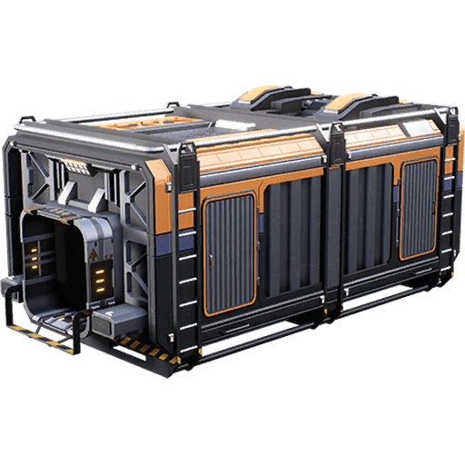
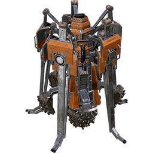

/u/MysticReddit
/u/MysticReddit* Introduction * Help * General * Inventory * Resources * Enemy * Power * Machine * Onboading * Mini Goals * Mini Factory * Main Factory (Pre Coal) * Equipment * Special * Vertical Layout * Tier 1, 2, Space Elevator, and 3 * Speedrun Coal Power Plant * Tiers 0..9 Manifest * Space Elevator Manifest * Storage * Resources
%LOCALAPPDATA%\FactoryGame\Saved\SaveGames\
Documents\My Games\FactoryGame\Screenshots\
|
| Upgrade | Iron Rod | Iron Plate | Wire | Cable | Concrete | Iron Ingot | Copper Ingot | Iron Ore | Copper Ore | Limestone | ||
|---|---|---|---|---|---|---|---|---|---|---|---|---|
| 1 | 10 | | | | |  10 | | 10 | | | ||
| 2 | 20 |  10 | | | | 35 | | 35 | | | ||
| 3 | 20 | 20 |  20 | | | 50 |  10 | 50 | | | ||
| 4 | | 75 | | 20 | 10 | 113 | 20 | 113 | 20 |  30 | ||
| 5 | 75 | | | 50 | 20 | 75 | 50 | 75 | 40 | 60 | ||
| 6 | 100 | 100 | 100 | | 50 | 250 | 50 | 250 | 100 | 150 | ||
| Upgrade | Iron Rod | Iron Plate | Wire | Cable | Concrete | Iron Ingot | Copper Ingot | Iron Ore | Copper Ore | Limestone | ||
| TOTAL | 225 | 205 | 120 | 70 | 80 | 533 | 130 | 533 | 160 | 240 |
Iron IngotsIron Plates ScrewsCopper IngotsWire
ScrewsCopper IngotsWireStorage Container |
→ | Smelter |
→ |  Constructor |
→ | Storage Container |
| Machine/Building | Category | MW | Iron Rod | Iron Plate | Wire | Cable | Concrete | Miner | Rotor | Reinforced Iron Plate |
|---|---|---|---|---|---|---|---|---|---|---|
 Biomass Burner Biomass Burner | Power | 30 | 15 | 15 | 25 | |||||
| Miner Mk.1 | Production | 5 | 10 | 10 | 1 Portable Miner | |||||
| Conveyor Splitter | Logistics | --- | 2 | 2 | ||||||
| Smelter | Production | 4 | 5 | 8 | ||||||
| Constructor | Production | 4 | 8 | 2  | ||||||
| Assembler | Production | 15 | 10 | 4  | 8 | |||||
| Storage Container | Organization | --- | 10 | 10 |
| Item | Iron Rod | Iron Plate | Screws | Rotor | Reinforced Iron Plate | Iron Ingot | |
|---|---|---|---|---|---|---|---|
| Portable Miner | 4 | 2 | ? | ||||
 Chainsaw Chainsaw | 25 | 160 | 5 | ? | |||
| Factory Cart | 4 | 2 | 4 | ? |
| Building | Iron Rod | Iron Plate | Wire | Cable | Concrete | Screws | Reinforced Iron Plate |
|---|---|---|---|---|---|---|---|
| Craft Bench | 3 | 3 | | | | 200 | |
 Equipment Workshop Equipment Workshop | 4 | 6 | | | | | |
 MAM MAM | | | 45 | 15 | | | 5 |
 AWESOME Sink AWESOME Sink | | | | 30 | 45 | | 25 |
 AWESOME Shop AWESOME Shop | | | | 30 | | | 10 |
| Item | Color | Layer | Consumption Rate |
|---|---|---|---|
| 1 → Rod | Red | 1 | 15 |
| 1.5 → Plates | Green | 2 | 30 |
| 1 → Screws | Blue | 3 | 10 |
| Tier | Upgrade | Iron Rod | Iron Plate | Wire | Cable | Concrete | Screw | Rotor | Reinforced Iron Plate | Iron Ingot | Copper Ingot | Limestone | ||
|---|---|---|---|---|---|---|---|---|---|---|---|---|---|---|
| 1 | Base Building | 100 | 100 | | | 200 | | | | 250 | 600 | |||
| 1 | Logistics | 150 | 150 | 300 | | | | | | 375 | 150 | | ||
| 1 | Field Research | | 100 | 300 | | | 300 | | | 225 | 150 | | ||
| 2 | Part Assembly | 200 | 300 | | 200 | | 500 | | | 775 | 200 | | ||
| 2 | Obstacle Clearing | | | | 100 | 100 | 500 | | | 125 | 100 | 300 | ||
| 2 | Jump Pads | | 300 | | 150 | | | 50 | | 1013 | 150 | | ||
| 2 | Resource Sink | 200 | 200 | 500 | | 400 | | | | 500 | 250 | 1200 | ||
| 2 | Logistics 2 | 300 | 300 | | | 200 | | | 50 | 1350 | | 600 | ||
| SE | Space Elevator | 400 | 250 | 1500 | | 500 | | | | 775 | 750 | 1500 | ||
| SE | Phase 1 | | | | | | | 50 | 50 | 1163 | | | ||
| 3 | Coal Power | | | | 500 | | | 50 | 150 | 2363 | 300 | | ||
| TOTAL | 1350 | 1700 | 2600 | 950 | 1400 | 1300 | 150 | 250 | 8914 | 2050 | 4200 |
+-------+---------------------------+---------------+------------------------+
| | Iron Iron Rod 4 Copper | Iron Copper | |
| Ratio | Plate Rod Screw Wire | Ingot Ingot | Notes |
+------------------------------+-------+---------------------------+---------------+------------------------+
| 200 Cable | / 1 | -- -- -- 400 | -- 200 | T2 Part Assembly |
| 300 Iron Plate | / 1.5 | 300 -- -- -- | 450 -- | T2 Part Assembly |
| 200 Iron Rod | * 1 | -- 200 -- -- | 200 -- | T2 Part Assembly |
| 500 Screw | * 4 | -- -- 125 -- | 125 -- | T2 Part Assembly |
+------------------------------+-------+---------------------------+---------------+------------------------+
| 500 Concrete | / 3 | -- -- -- -- | -- -- | Space Elevator |
| 250 Iron Plate | / 1.5 | 250 -- -- -- | 375 -- | Space Elevator |
| 400 Iron Rod | * 1 | -- 400 -- -- | 400 -- | Space Elevator |
|1500 Wire | * 2 | -- -- -- 1500 | -- 750 | Space Elevator |
+------------------------------+-------+---------------------------+---------------+------------------------+
| 50 Smart Plating | 1:1 | | | Space Elevator Phase 1 |
| 50 Rotor | 5:25 | -- | | Space Elevator Phase 1 |
| 250 Iron Rod | * 1 | -- 250 -- -- | 250 -- | Space Elevator Phase 1 |
| 1250 Screw | * 4 | -- 312.5 -- | 312.5 -- | Space Elevator Phase 1 |
| 50 Reinforced Iron Plate | 6:12 | | | Space Elevator Phase 1 |
| 300 Iron Plate | / 1.5 | 300 -- -- -- | 450 -- | Space Elevator Phase 1 |
| 600 Screw | * 4 | -- -- 150 -- | 150 -- | Space Elevator Phase 1 |
+------------------------------+-------+---------------------------+---------------+------------------------+
| 500 Cable | * 1 | -- -- -- 1000 | -- 500 | T3 Coal |
| 50 Rotor | 5:25 | | | T3 Coal |
| 250 Iron Rod | * 1 | -- 250 -- -- | 250 -- | T3 Coal |
| 1250 Screw | * 4 | -- -- 312.5 -- | 312.5 -- | T3 Coal |
| 150 Reinforced Iron Plate | 6:12 | | | T3 Coal |
| 900 Iron Plate | / 1.5 | 900 -- -- -- | 1350 -- | T3 Coal |
| 1800 Screw | * 4 | -- -- 450 -- | 450 -- | T3 Coal |
+------------------------------+-------+---------------------------+---------------+------------------------+
Total 1750 1100 1350 2900 4625 1450
Time to collect from 1 Portable Miner ?:?? ?:??
Time to bench craft ?:?? ?:??
Simplify Reinforced Iron Plate & Rotor Simplify Cable and Screw 700 Cable 700 Cable n/a Cable 500 Concrete 500 Concrete 500 Concrete 550 Iron Plate 1750 Iron Plate 1750 Iron Plate 600 Iron Rod OR 1100 Iron Rod OR 2450 Iron Rod 150 Reinforced Iron Plate n/a Reinforced Iron Plate n/a Reinforced Iron Plate 100 Rotor n/a Rotor n/a Rotor 500 Screw 5400 Screw n/a Screw 1500 Wire 1500 Wire 2900 Wire
8 Reinforced Iron Plate <- 48 Iron Plate & 96 Screw 4 Rotor <- 20 Iron Rod & 100 Screw <- 25 Rod 10 Cable <- 20 Wire
You will also need 1 Cable to hook the Assembler up to the HUB's Biomass Burner.
for power it takes 12 Seconds to burn 1 Biomass in the HUB's Biomass Burner; 300 Seconds/25 Biomass. That is,
50 Leaves -> 25 Biomass -> 10 Smart Plating @ 300 seconds = 5 Minutes, 125 Leaves -> ~63 Biomass -> 25 Smart Plating @ 750 seconds = ~13 Minutes, 250 Leaves -> 125 Biomass -> 50 Smart Plating @ 1,500 seconds = 25 Minutes.
Lastly, to load the Smart Plating into the Space Elevator you will need:
+-------------+-------+
| Iron Iron | Iron |
| Plate Rod | Ingot |
+------------------------------+-------------+-------+
| 1 Storage Container | | |
| 10 Iron Plate | 10 -- | 15 |
| 10 Iron Rod | -- 10 | 10 |
| 1 Conveyor Belt Mk. 1 | | |
| 1 Iron Plate | 1 -- | 3 |
+------------------------------+-------------+-------+
Note: Also, Tier 2 Resource Sink Bonus Program will unlock the AWESOME Sink and AWESOME Shop (which could be used to purchase items.)
Tier 0 Manifest Up 1 Up 2 Up 3 Up 4 Up 5 Up 6 =============== ==== ==== ==== ==== ==== ==== 70 Cable | -- -- -- 20 50 -- 80 Concrete | -- -- -- 10 20 50 205 Iron Plate | -- 10 20 75 -- 100 225 Iron Rod | 10 20 20 -- 75 100 120 Wire | -- -- 20 -- 100
Tier 1+2 Manifest Base Log Field Part Obst Jump Sink Log ================== ==== === ===== ==== ==== ==== ==== === 450 Cable | -- -- -- 200 100 150 -- -- 900 Concrete | 200 -- -- -- 100 -- 400 200 1450 Iron Plate | 100 150 100 300 -- 300 200 300 950 Iron Rod | 100 150 -- 200 -- -- 200 300 50 Reinforced Iron Plate | -- -- -- -- -- -- -- 50 50 Rotor | -- -- -- -- -- 50 -- -- 1300 Screw | -- -- 300 500 500 -- -- -- 1100 Wire | -- 300 300 -- -- -- 500 --
Tier 3+4 Manifest Coal Vehi Steel Asset BP Log Steel Power Hype ================= ==== ==== ===== ===== ==== === ===== ===== ==== 1200 Cable | 500 200 -- -- 500 -- -- -- -- 2000 Concrete | -- -- 500 -- 1000 -- 500 -- -- 500 Copper Sheet | -- -- -- -- -- -- -- -- 500 100 Encased Industrial Beam | -- -- -- -- -- -- -- 50 50 400 Iron Plate | -- 400 -- -- -- -- -- -- -- 600 Iron Rod | -- -- -- 600 -- -- -- -- -- 475 Modular Frame | -- 25 50 -- 100 -- 100 200 -- 650 Reinforced Iron Plate | 150 -- -- 100 -- 400 -- -- -- 500 Rotor | 50 100 150 -- -- -- 200 -- -- 500 Steel Beam | -- -- -- -- 200 200 -- 100 -- 300 Steel Pipe | -- -- -- -- -- 200 100 -- 300 2500 Wire | -- -- 1000 1500 -- -- -- 2000 --
Tier 5+6 Manifest Jet Oil Log Fluid Power Indy Mono Rail Pipe BP ================= ==== === === ===== ===== ==== ==== ==== ==== === 2000 Cable | 1000 -- -- -- -- 1000 -- -- -- -- 2500 Copper Sheet | -- 500 -- 1000 -- -- -- 1000 -- -- 900 Encased Industrial Beam | -- 100 300 -- 100 -- 500 -- -- -- 150 Heavy Modular Frame | -- -- -- -- --- -- -- -- 50 100 1000 Iron Plate | 1000 -- -- -- -- -- -- -- -- -- 400 Modular Frame | -- -- 400 -- -- 200 -- -- -- -- 400 Motor | 50 50 -- -- 100 200 250 -- -- -- 200 Plastic | -- -- -- 200 200 400 -- -- 1000 -- 1600 Rubber | -- -- 200 -- 200 -- -- -- 1000 400 1400 Steel Beam | -- -- -- 400 -- -- 1000 -- -- -- 1900 Steel Pipe | -- 500 -- -- -- -- 1000 400 -- --
Tier 7+8 Manifest Baux Hover Log Hazmat Ctrl Aero Power Alum Lead Part ================= ==== ===== === ====== ==== ==== ===== ==== ==== ==== 1000 Alclad Aluminum Sheet | -- 100 200 -- 200 100 -- 400 -- -- 900 Aluminum Casing | -- -- -- 100 400 200 -- 200 -- -- 1000 Cable | -- -- -- -- -- -- 1000 -- -- -- 400 Computer | 100 100 -- -- 200 -- -- -- -- -- 2000 Concrete | -- -- -- -- -- -- 2000 -- -- -- 200 Cooling System | -- -- -- -- -- -- -- -- -- 200 400 Encased Industrial Beam | -- -- 400 -- -- -- -- -- -- -- 150 Fused Modular Frame | -- -- -- -- -- -- -- -- 50 100 50 Gas Filter | -- -- -- 50 -- -- -- -- -- -- 400 Heavy Modular Frame | 100 100 -- -- -- -- 200 -- -- -- 800 Motor | 250 250 -- -- -- 300 -- -- -- -- 1000 Plastic | -- -- -- -- 1000 -- -- -- -- -- 3000 Quickwire | -- -- -- 500 -- -- -- -- -- 2500 100 Radio Control Unit | -- -- -- -- -- 50 -- 50 -- -- 600 Reinforced Iron Plate | -- -- 600 -- -- -- -- -- -- -- 500 Rubber | 500 -- -- -- -- -- -- -- -- -- 1000 Steel Pipe | -- -- -- -- -- -- -- -- 1000 -- 150 Supercomputer | -- -- -- -- -- -- 50 -- 100 -- 50 Turbo Motor | -- -- -- -- -- -- -- -- -- 50 3000 Wire | -- -- -- -- -- -- -- 3000 -- --
Tier 9 Manifest Matr Quant BP SER Peak =============== ==== ===== === ==== ===== 5000 Alcad Aluminum Sheet | -- -- -- -- 5000 500 Cooling System | 500 -- -- -- -- 850 Ficsite Trigon | -- 100 500 -- 250 600 Fused Modular Frame | 100 -- 500 -- -- 10000 Iron Plate | -- -- -- -- 10000 100 Neural-Quantum Processor | -- -- 100 -- -- 750 Radio Control Unit | 250 -- -- 500 -- 1000 SAM Fluctuator | -- -- -- 1000 -- 400 Supercomputer | -- 400 -- -- -- 100 Superposition Oscillator | -- -- -- 100 -- 550 Time Crystal | -- 50 250 -- 250 200 Turbo Motor | -- 200 -- 250 --
Space Elevator Manifest ======================= | Phase1 Phase2 Phase3 Phase4 Phase5 Smart Plating | 50 1,000 1,000 1,250 1,000
Automated Wiring | -- 100 500 5,000 2,500 Versatile Framework | -- 1,000 2,500 1,250 640
Adaptive Control Unit | -- -- 100 1,000 500 Modular Engine | -- -- 500 625 1,625
Assembly Director System | -- -- -- 500 250 Magnetic Field Generator | -- -- -- 500 256 Nuclear Pasta | -- -- -- 100 1,000 Thermal Propulsion Rocket | -- -- -- 250 200
Biochemical Sculptor | -- -- -- -- 1,000 AI Expansion Server | -- -- -- -- 256 Ballistic Warp Drive | -- -- -- -- 200
*1 = 50 Reinforced Iron Plate
* 6 = 300 Iron Plate
*12 = 600 Screw
*1 = 50 Rotor
* 5 = 250 Iron Rod
*25 = 1,250 Screw
------------
300 Iron Plate
250 Iron Rod
1,850 Screw
Phase 2
*1 = 1,000 Reinforced Iron Plate
* 6 = 6,000 Iron Plate
*12 = 12,000 Screw
*1 = 1,000 Rotor
* 5 = 5,000 Iron Rod
*25 = 25,000 Screw
------------
6,000 Iron Plate
5,000 Iron Rod
31,000 Screw
* 1 = 1,000 Modular Frame
* 3 = 3,000 Reinforced Iron Plate
* 6 = 18,000 Iron Plate
*12 = 36,000 Screw
*12 = 12,000 Iron Rod
*12 = 12,000 Steel Beam
------------
18,000 Iron Plate
12,000 Iron Rod
36,000 Screw
12,000 Steel Beam
* 1 = 100 Stator
*3 = 300 Steel Pipe
*8 = 800 Wire
*20 = 2,000 Cable
Phase 3
*5 = 500 Automated Wiring
* 1 = 500 Stator
*3 = 1,500 Steel Pipe
*8 = 4,000 Wire
* 20 = 10,000 Cable
*5 = 500 Circuit Board
* 4 = 2,000 Plastic
* 2 = 1,000 Copper Sheet
*1 = 100 Heavy Modular Frame
* 5 = 500 Modular Frame
* 3 = 1,500 Reinforced Iron Plate
* 6 = 4,500 Iron Plate
*12 = 18,000 Screw
*12 = 6,000 Iron Rod
* 20 = 2,000 Steel Pipe
* 5 = 500 Encased Industrial Beam
*120 = 12,000 Screws
*2 = 200 Computer
* 4 = 800 Circuit Board
*2 = 1,600 Copper Sheets
*4 = 3,200 Plastic
* 8 = 1,600 Cable
* 16 = 3,200 Plastic
------------
11,600 Cable
1,300 Circuit Boards
2,600 Copper Sheet
8,400 Plastic
3,500 Steel Pipe
4,000 Wire
* 2 = 1,000 Motor
*2 = 2,000 Rotor
*2 = 2,000 Stator
*15 = 7,500 Rubber
* 2 = 1,000 Smart Plating
*1 = 1,000 Reinforced Iron Plate
*1 = 1,000 Rotor
------------
1,000 Reinforced Iron Plate
3,000 Rotor
2,000 Stator
Phase 4
=== Floor 1 === === Floor 2 === === Floor 3 === === Floor 4 === ---Ores--- ---Ingots--- ---Copper--- ---Iron--- 1 Bauxite Ore --- Cable Heavy Modular Frame 2 Caterium Ore -> Caterium Ingot -> QuickWire Iron Plate 3 Coal -> Petroleum Coke Copper Sheet Iron Rod 4 Copper Ore -> Copper Ingot -> Wire Modular Frame 5 Iron Ore -> Iron Ingot --- Reinforced Iron Plate 6 Limestone -> Concrete --- Screw 7 Mycelia -> Fabric --- SE1 Smart Plating 8 Silica --- --- SE2 Versatile Framework 9 Sulfur -> Black Powder --- SE2 Automated Wiring 10 Quartz (Raw) -> Quartz Crystal -> Crystal Osc. SE3 Modular Engine ---Industrial--- ---Aluminum--- ---Steel--- ---Space Elevator--- 11 Heat Sink Aluminum Casing --- SE3 Adaptive Control Unit 12 Motor Aluminum Ingot Encased Beam SE4 Assembly Director Systems 13 Rotor Aluminum Scrap Steel Beam SE4 Magnetic Field Generator 14 Stator Aluminum Sheet Steel Ingots SE4 Nuclear Pasta 15 --- Packaged Solution Steel Pipe SE4 Thermal Propulsion Rocket ---Electronics--- ---Plastics--- ---Packaged--- ---Packaged 2--- 16 AI Limiter Plastic Packaged Biofuel Packaged Sulfuric Acid 17 Circuit Board Polymer Resin Packaged Fuel Packaged Nitrogen Gas 18 Computer Rubber Packaged Heavy Oil --- 19 High Speed --- Packaged Oil --- 20 Supercomputer --- Packaged Turbo Fuel --- 21 Radio Control --- Packaged Water --- Legend: -> Makes --- Free slotTo organize "lanes" of traffic:
For raw ores:
---Ores--- 1 Aluminum Scrap 2 Bauxite Ore 3 Caterium Ore 4 Coal 5 Copper Ore 6 Iron Ore 7 SAM 8 Sulfur 9 Raw Quartz ---Liquids--- 10 Alumina Solution 11 Crude Oil 12 Heavy Oil Residue 13 Fuel 14 Nitric Acid 15 Turbofuel 16 Water Notes: * Liquid Biofuel depends on Solid Biomass, the latter which has no mass production means. 10 Packaged Biofuel 11 Packaged Fuel 12 Packaged Heavy Oil 13 Packaged Oil 14 Packaged Turbo Fuel 15 Packaged Water --- Gas --- 16 Nitrogen Gas
| Head Lift | |
|---|---|
| 0m | 400.0 m3 |
| 1m | 400.0 m3 |
| 2m | 400.0 m3 |
| 3m | 400.0 m3 |
| 4m | 359.2 m3 |
| 5m | 312.2 m3 |
| 6m | 310.6 m3 |
| 7m | 312.2 m3 |
| 8m | 309.0 m3 |
| 9m | 128.6 m3 |
| 10m | 125.5 m3 |
| 11m | 12.5 m3 |
| 12m | 9.4 m3 |
| 13m | 8.8 m3 |
The 4m offset varies from around 359.2 - 360.8 m3
The 5m offset varies from around 312.2 - 332.5 m3